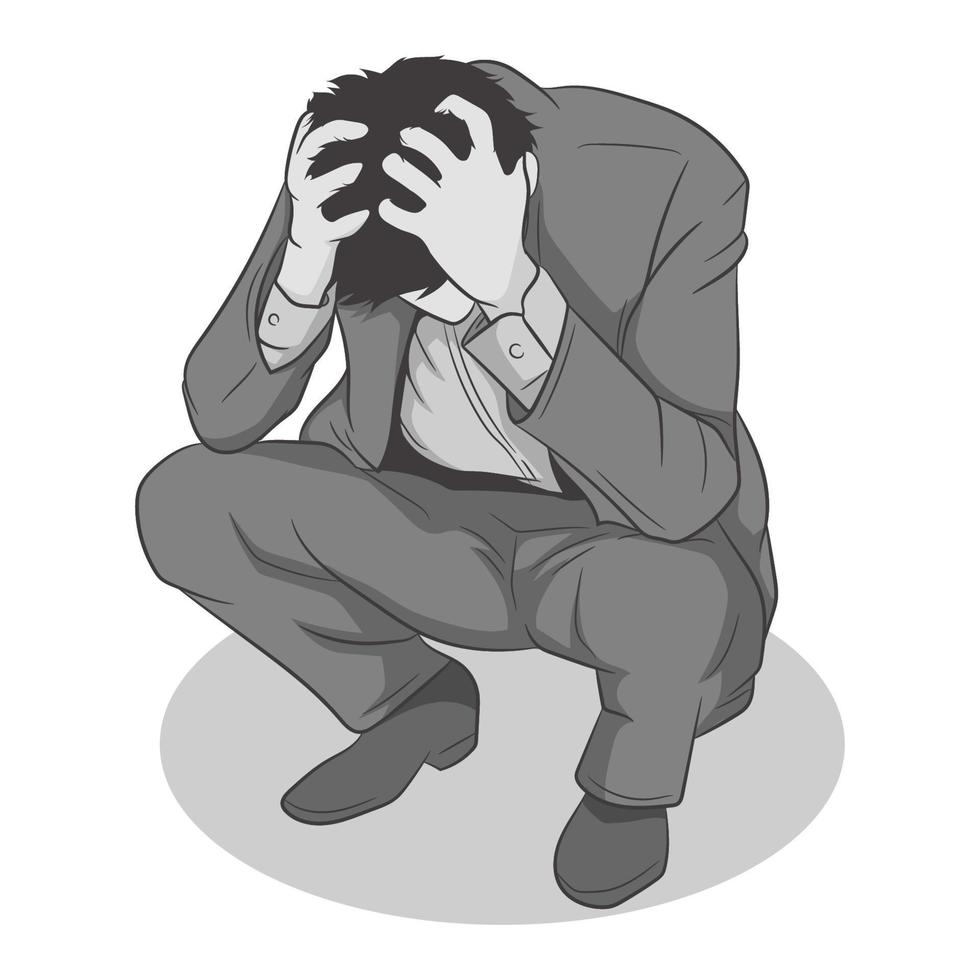

So about those cats...
Cats are amazing, we all love them. We should all get them. If you do not have one, you are crazy. You are weird. Do you want people saying that? To you, the catless one? If not, just know, without a cat, they will. And there's no way to prevent that. Unless of course, you get a cat. This webpage will tell you the benefits of getting a bonafide beautiful cat. So listen close. As I will not tell this again. Granted, you can read it again. But quiet down about that fact.
Reasons For Le Cat

They are really funny!

They cure depression!
They can comfort you!
People Who Don't Have One...

Are depressed...
And hate life...